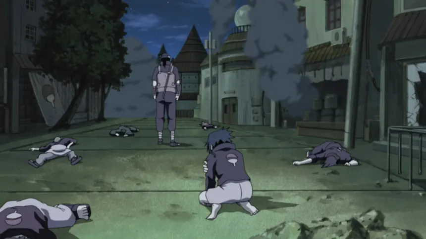
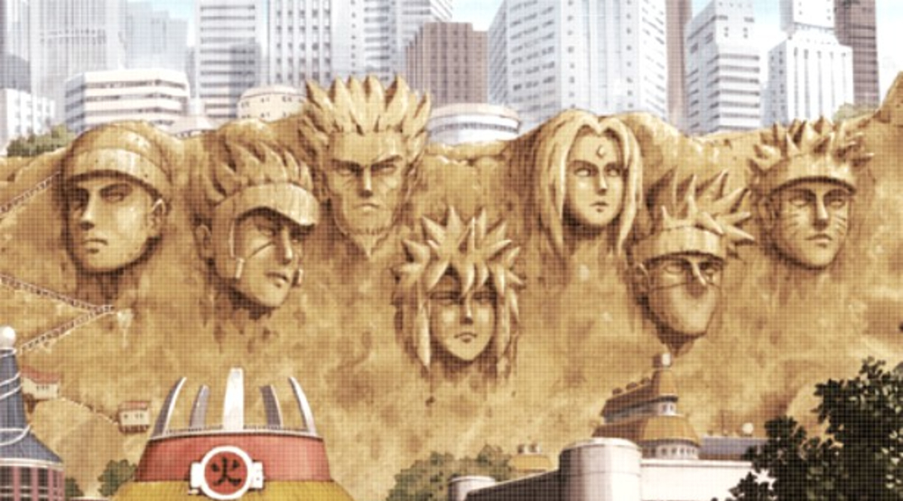

Aldea De La Hoja
Aldea oculta del País del Fuego, rodeada de bosques y reconocida por su espíritu de comunidad y su tradición shinobi.

Mansión Hokage
Edificio central donde el Hokage coordina las decisiones políticas, administra la aldea y asigna misiones a los ninjas.

Academia Ninja
Institución donde los niños de Konoha aprenden las bases del ninjutsu, el combate y el trabajo en equipo antes de graduarse como Genin.

Masacre Uchiha
Escenario de uno de los episodios más trágicos de la historia de la aldea, que marcó profundamente el pasado del clan Uchiha y de Konoha.

Ichiraku Ramen
Clásico puesto de ramen muy querido por habitantes y ninjas, famoso por su ambiente cercano y sus platos calientes.

Roca Hokage
Monumento tallado en la montaña que domina la aldea, con los rostros en piedra de quienes lideraron y protegieron Konohagakure.